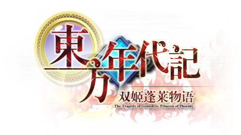

全评价攻略
第一章
第二章
第二章 间章
第三章
第三章 间章
第四章
第四章 间章
第五章
第五章 间章
第六章
第六章 间章
第七章
第八章
第八章 间章
奥兰兹琪姆任务
升空殿、极武葬
第九章
森罗篇攻略
一日目
二日目
三日目
四日目
五日目
全问答攻略
初级难度
中级难度
高级难度
森罗篇问答
各要素搜集
全料理图谱
全饰品效果
连携技一览
EX武器效果
全称号搜集
剧情称号
章节称号
全局称号